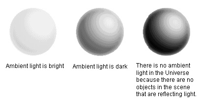
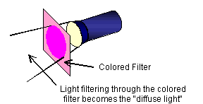

For our eyes to be able to see an object, the object must be either emitting light or reflecting light. On a computer, it is difficult to represent in real time the situation where an object itself is emitting light, so this discussion will focus on showing you how to represent reflected light.
To represent reflected light, you need to know the position, direction, and intensity for the light coming from the light source as well for two other types of light -- ambient light and diffuse light.
Ambient light is the surrounding atmospheric light. For example, the part of an object that is on the opposite side from a light source is usually not black. That's because it is lit up slightly by ambient (atmospheric) light. Ambient light occurs because surrounding objects produce irregular reflections. Ambient light has no direction, so if you give a color to ambient light, that light is reflected on everything in the scene.

Diffuse light is light that has been scattered through reflection or refraction. For example, transmitting a light through a translucent material diffuses the light. Diffuse lights take on the color of the translucent material that scattered the light.

To implement lighting, you simply set the position, direction, and intensity of the source light, and also specify appropriate ambient and diffuse lights.
Nintendo® Confidential
Copyright © 1999
Nintendo of America Inc. All Rights Reserved
Nintendo and N64 are registered trademarks of Nintendo
Last Updated March, 1999